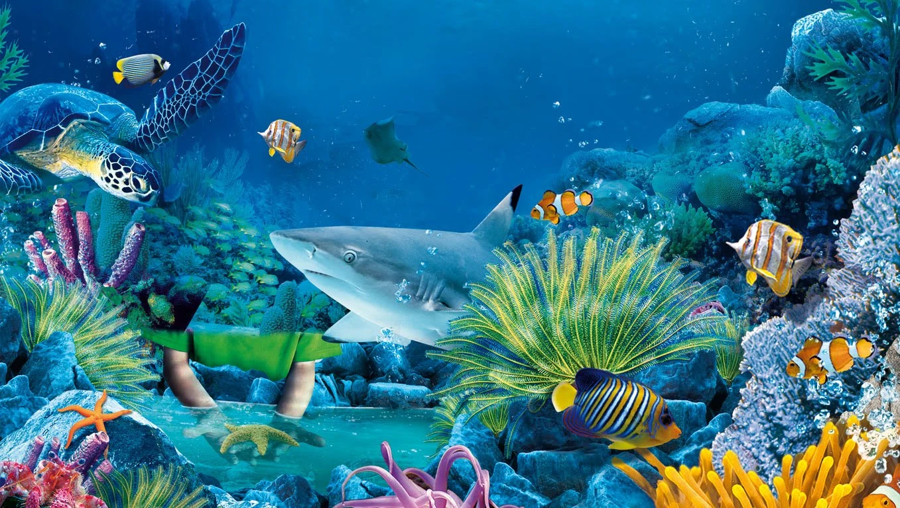

CARACTERISTICAS DE LOS ANIMALES MARINOS

- La respiración puede ser por medio de branquias, como en los peces, pulmonar, como en el caso de los mamíferos, o por difusión a través de la piel o tejidos. En este sentido, dependiendo del tipo de respiración, algunos animales pueden mantenerse de manera permanente bajo el agua, como los peces, y otros deben salir a la superficie para respirar aire, siendo
Los animales marinos tienen la capacidad de regular tanto el agua como la cantidad de sal, para lo cual usan diversos medios anatómicos y fisiológicos que mantienen el balance hídrico y de salinidad en el cuerpo.
La base trófica de los océanos está constituida por el plancton, del cual dependen muchas especies marinas para su subsistencia. Otras, consumen algas de mayor tamaño o plantas acuáticas, pero también están los depredadores carnívoros, quienes se alimentan al cazar a otros animales..
Es común en diversos animales marinos el comportamiento migratorio, el cual está influido por los cambios de temperatura, las corrientes, disponibilidad de alimentos y épocas reproductiva o de cría.
En relación con su respiración, los animales del mar se basan en el oxígeno disuelto presente en el agua. No obstante, también hay muchas especies de animales marinos que cogen el oxígeno del aire, como los animales terrestres, por lo que deben salir a la superficie cada cierto tiempo para respirar.<